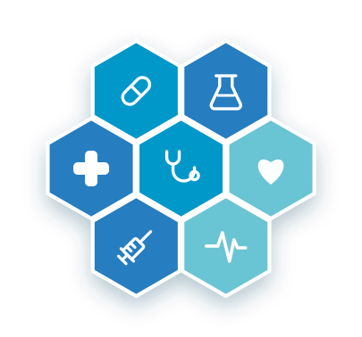

Visite specialistiche
Cardiologia, ortopedia, dermatologia, ginecologia e oltre 30 altre specialità con medici esperti e qualificati.
Il Medical Center Moscato riunisce a Quadrivio di Campagna oltre 35 specialità mediche e un team di professionisti qualificati, in un unico centro moderno pensato per il tuo benessere.

Riuniamo in un'unica struttura numerose specialità, per offrirti assistenza completa, diagnosi accurate e percorsi di cura su misura.
Cardiologia, ortopedia, dermatologia, ginecologia e oltre 30 altre specialità con medici esperti e qualificati.
Ecografia degli organi interni, articolare, muscolo-tendinea e senologica per diagnosi tempestive e accurate.
Fisioterapia, osteopatia, nutrizione e terapia del dolore per il recupero e il tuo benessere quotidiano.
Oltre 35 specialità a disposizione dei pazienti. Consulta l'elenco completo nella pagina Servizi.
Contattaci telefonicamente o su WhatsApp per fissare un appuntamento con i nostri specialisti.
📞 Chiama 0828 44215